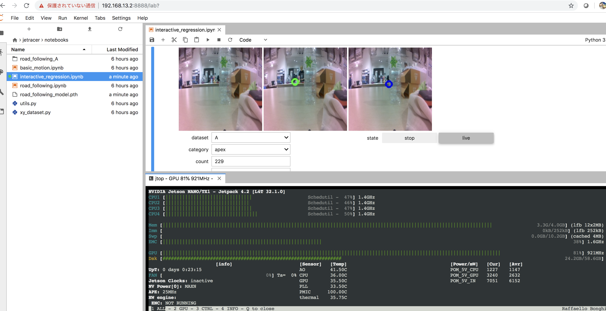
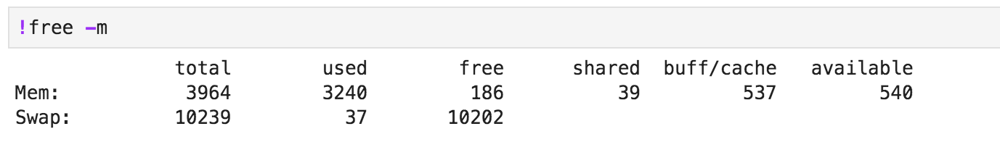

メモリの使用量
JetRacerのNotebookでは、カメラの遅延等不安定になる事があります。考えられる主な要因は、ネットワーク遅延とメモリの枯渇です。
jetson-stats
Jetson用のメモリ監視ツールにtegrastatsが存在しますが非常にわかりくいので、jetson-statsを使用します。
jetson-statsのインストール
1 | |
実行
1 | |

free
freeコマンドでもメモリ状況を確認可能です。
1 | |

メモリの残量
100MBより少なくなるとNotebookがカクついてまともに動かなくなります。